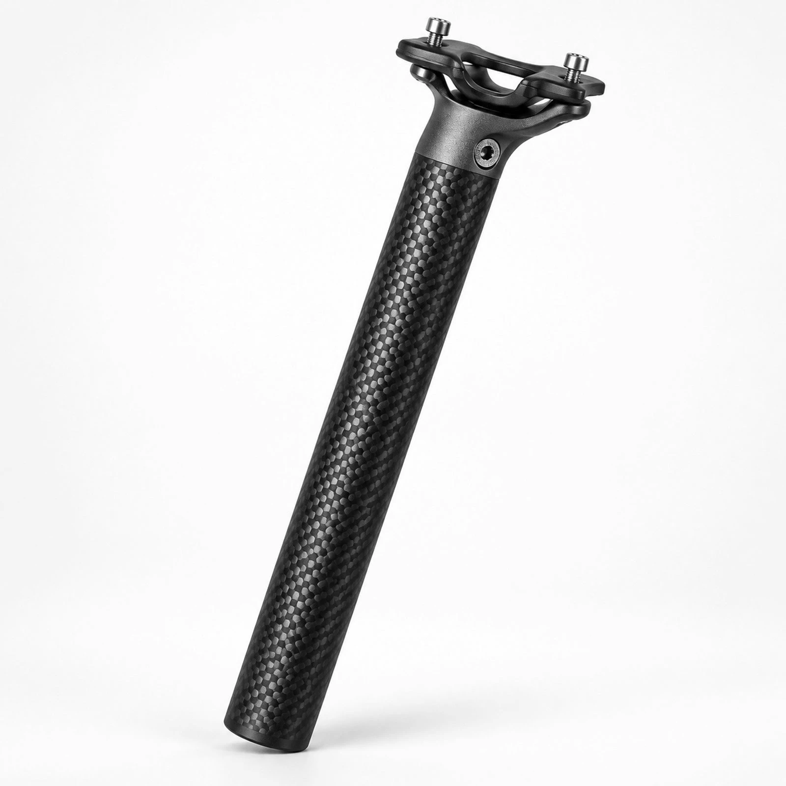
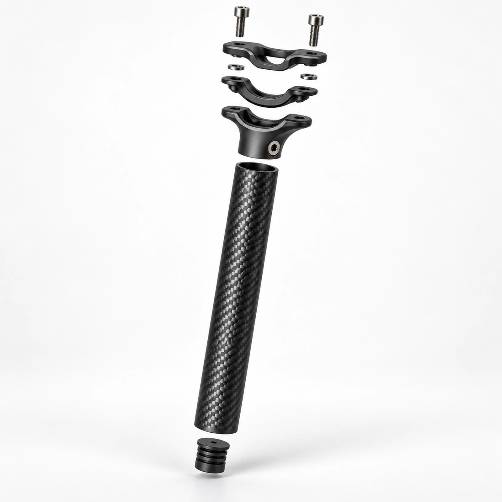

Beat 01 · Interface
Clamp geometry
Two-bolt rail cradle, machined head, and a side adjuster that keeps saddle angle honest under load.
- CNC aluminum head
- Hex hardware
- Stable rail bite
Composing the stage…
STRIA
A 3K weave seatpost built for stiffness where you need it and compliance where you sit.
Beat 01 · Interface
Two-bolt rail cradle, machined head, and a side adjuster that keeps saddle angle honest under load.
Beat 02 · Material
The checkerboard carbon is structural language — aligned fibers under a satin resin skin.
Specifications
1 / 6
STRIA
A precision 3K weave seatpost with machined clamp geometry. Motion is reduced on this device preference — the full story remains below.

Two-bolt rail cradle, machined head, and a side adjuster for honest saddle angle under load.
Aligned carbon under satin resin — hollow tube, sealed end plug, continuous weave.
